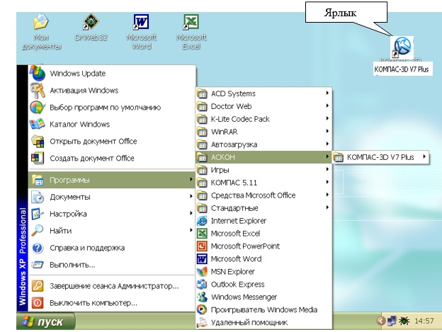
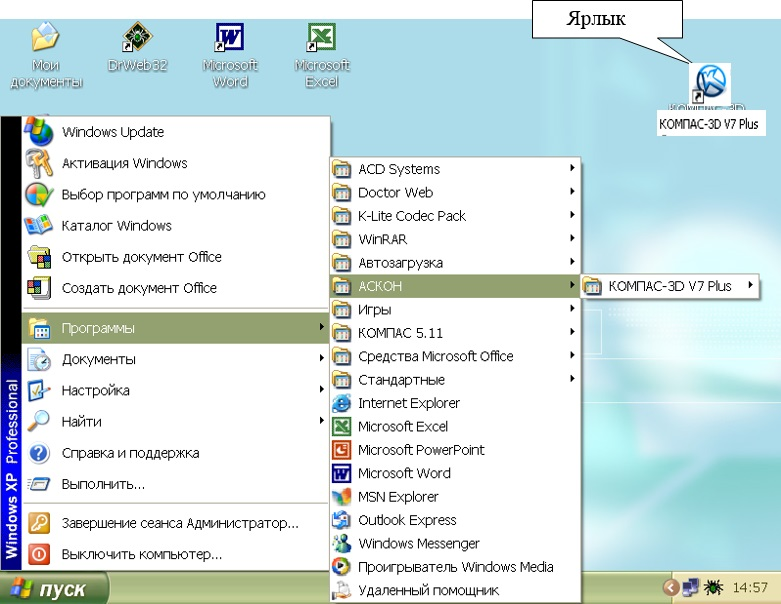

1.2 Способи входу в «КОМПАС 3D»
1. Натиснути
на конопку «Пуск» на робочому
столі,
з'явиться Головне меню операційної системи Windows, в якому слід вибрати рядок
“Программы”. У тому, що розкрився
підменю вибрати рядок “АСКОН - КОМПАС- 3d V12 Plus” і зробити подвійне клацання лівою кнопкою миші на ярлику
системи.
2.
Зробити подвійне клацання на ярлику системи, розташованому

рис.1 Робочий стіл
Після запуску
системи " Компас" на екрані відобразиться головне вікно системи, на якому
представлені елементи управління системою (рис.2).
Рядок головного меню
системи розташований у
верхній частині програмного вікна, відразу під рядком заголовка - назви
системи: “КОМПАС- 3d V10 Plus”. У
ній розташовані усі основні меню системи. У кожному з меню зберігаються
пов'язані з ним команди.
“Панель управления” розташована у верхній частині вікна системи під рядком головного меню. У ній зібрані команди, які найчастіше вживаються при роботі з системою.

Рис.2
Щоб вийти з системи при
закінченні роботи після збереження креслення в пам'яті комп'ютера,
можна:
1) Клацнуть
по кнопці “Закрыть программу” у
верхньому правому кутку екрану (мал.2);
2) За
допомогою меню
“Файл®Выход”;
3) Набором з
клавіатури
“Alt – F4:.